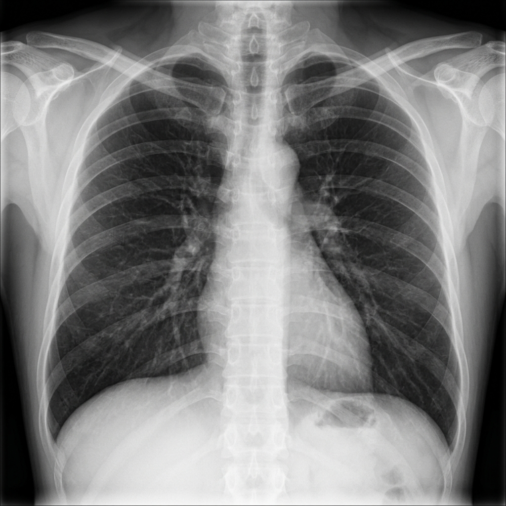

🩺 Sanidad Inteligente
Asistente de Triaje Inteligente
Simulador clínico de clasificación de pacientes mediante análisis de síntomas por lenguaje natural.
Asistente de Triaje IA
Respuestas clínicas automáticasClasificación de Gravedad
Esperando entrada...
Introduce los síntomas del paciente en el chat para recibir la evaluación clínica automatizada.
Analizador de Pruebas Clínicas e Imágenes
Detección de anomalías en radiografías de tórax y análisis automatizado de biomarcadores.
Radiografía de Tórax (Rayos X)

Análisis de Biomarcadores (Sangre)
Valores resaltados según rangos clínicos estándar.
| Biomarcador | Valor Obtenido | Rango Referencia | Estado |
|---|
Calculadora de Riesgo Clínico Cardiovascular
Estimación del riesgo de sufrir un evento cardiovascular a 10 años utilizando múltiples parámetros.
Parámetros del Paciente
Riesgo Estimado por IA
5.2%
Bajo
Importancia de Factores (Explicabilidad IA)
Contribución de cada parámetro al nivel de riesgo.